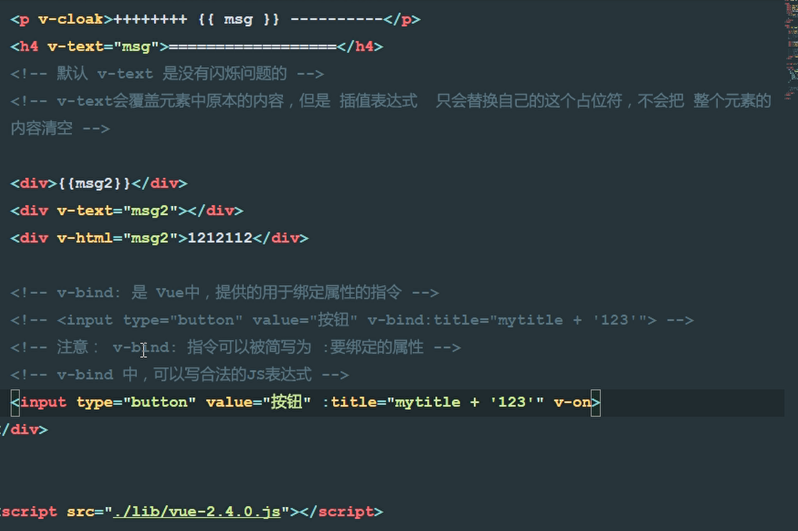

一、理解MVC和MVVM的关系：
MVC：Model View Controller (模型 视图 控制器）
分别为：业务逻辑、界面、用来调度View和Model层
MVVM：Model View ViewModel
M：每个页面中单独的数据；
V:每个页面中的HTML机构；
VM：调度者，V从VM中获取数据，实现数据的双向绑定！
二、VUE代码实现MVVM：
前期为了理解VUE.JS，先采用引入的方式进行VUE的操作：
三、部分vue指令：
1、v-cloak:能解决插值表达式{{ }} 闪烁的问题，只会替代自己的占位符，不会把整个元素的内容清空；
2、v-text：默认没有闪烁问题的，但是会覆盖元素中原本的内容；
3、v-html:可以解析成HTML；
4、v-bind:是vue中，提供的用于（单向）绑定属性的指令，里面可以写合法的JS表达式，简写为： ；

5、v-on：事件绑定机制（可以绑定像点击事件一样）；
6、v-if:元素是否移除或者插入（根据表达式的真假判断）；
7、v-show：元素是否显示或者隐藏；
8、methods:定义了当前vue实例所有可用的方法：
（在定义的vue实例中，若要调用methods中的方法或要获取data上数据，需要this代表实例对象，实例会监听data中所有数据上的改变，只要一变化，就会自动把最新的数据，从data上同步到页面中去。这样程序员只需要关心数据，不需要考虑如同重新渲染DOM）
var_this =this （代表最初的对象）
ES6: 箭头函数=> 表示其内部的this永远和外部的this保持一致。
9、事件修饰符：
stop：阻止冒泡；
prevent:阻止默认行为；
capture:添加事件侦听器时使用事件捕获模式；
self:只当事件在该元素本身（比如不是子元素）触发时触发回调；
once:事件只触发一次。
10、v-model:双向数据绑定（在表单元素中用如：input\select\checkbox）
四、vue中通过属性绑定为元素设置class类样式和style行内样式：
1、class样式：
①：数组样式；
②、三元表达式；
③、数组中嵌套对象；
④、直接使用对象；
2、style行内样式：
①、直接在元素上通过：style的形式，书写对象；
②、将样式对象，定义到data中，并直接引到：style中；
③、在;style中通过数组，引用多个data上的样式对象。
五、v-for:
1、v-for遍历，操作数组、对象；
<p v-for="count in 10">第 {{ count }} 循环 </p><p v-for="(val,key,i) in user">值是:{{ val }}--键是：{{ key }}--索引： {{ i }}</p>in后面可以是数组、对象数组、对象、数字。
2、key属性只能使用number 获取String;
key在使用的时候，必须使用v-bind属性绑定的形式指定key值；
在组件中，使用v-for循环时，若有问题，必须在使用时，指定唯一的字符串/数字类型：key值。
<p v-for = "item in list " :key = " item.id "> </P><!DOCTYPE html>
<html lang="en">
<head>
<meta charset="UTF-8" />
<meta name="viewport" content="width=device-width, initial-scale=1.0" />
<meta http-equiv="X-UA-Compatible" content="ie=edge" />
<title>Document</title>
<style>
/* 自定义两组样式，来控制transition内部的元素实现动画 */
.v-enter,
.v-leave-to {
opacity: 0;
transform: translateX(150px);
}
.v-enter-active,
.v-leave-active {
transition: all 0.8s ease;
}
/* 自定义前缀 */
.my-enter,
.my-leave-to {
opacity: 0;
transform: translateY(150px);
}
.my-enter-active,
.my-leave-active {
transition: all 0.8s ease;
}
/* 定义动画小球 */
.ball {
width: 150px;
height: 150px;
border-radius: 50%;
background-color: red;
}
</style>
<link rel="stylesheet" href="./lib/animate.css" />
</head>
<body>
<div id="app">
<p>{{ msg }}</p>
<div v-text="msg2"></div>
<div v-html="msg2">123123</div>
<input
type="button"
value="按钮"
:title="mytitle + '123'"
v-on:click="show"
/>
<input type="button" value="按钮1" @click="flag=!flag" /><br />
<!-- transition元素，把被动画控制的元素包裹起来！固定的！ -->
<transition>
<h3 v-if="flag">这是个会移动并且渐隐渐现的H3文字</h3>
</transition>
<input type="button" value="按钮2" @click="flag2=!flag2" /><br />
<transition name="my">
<h6 v-if="flag2">这是个会移动并且渐隐渐现的H6文字</h6>
</transition>
<br />
<br />
<br />
<br />
<br />
<!-- 使用第三方的CSS实现动画 -->
<input type="button" value="按钮3" @click="flag3=!flag3" /><br />
<transition
enter-active-class="bounceIn"
leave-active-class="bounceOut"
:duration="{ enter : 1000 , leave : 2000 }"
>
<h2 v-if="flag3" class="animated">这是个会蹦蹦跳跳的H2文字</h2>
</transition>
<!-- 跑马灯效果 -->
<!-- 绑定点击事件 -->
<br />
<br />
<br />
<br />
<br />
<input type="button" value="浪起来" @click="lang" />
<input type="button" value="低调" @click="stop" />
<h4>{{ msg3 }}</h4>
<h4>{{ msg4 }}</h4>
<!-- 双向数据绑定v-model -->
<input type="text" v-model="msg4" /><br />
<!--计算器 -->
<input type="text" v-model="n1" />
<select v-model="opt">
<option value="+">+</option>
<option value="-">-</option>
<option value="*">*</option>
<option value="/">/</option>
</select>
<input type="text" v-model="n2" />
<input type="button" value="=" @click="calc" />
<input type="text" v-model="result" />
<br />
<br />
<!-- 定义动画小球 -->
<input type="button" value="快从碗里出去" @click="flag4=!flag4" />
<transition
@before-enter="beforeEnter"
@enter="enter"
@after-enter="afterEnter"
>
<div class="ball" v-show="flag4"></div>
</transition>
</div>
<script src="./lib/vue.js"></script>
<script>
var vm = new Vue({
el: "#app",
data: {
msg: "欢迎学习",
msg2: "<h1>哈哈！我是一个大大的H1</h1>",
mytitle: "这是一个自己定义的title",
msg3: "猥琐发育，别浪~~!",
intervalId: null, //在data上定义 停止定时器ID
msg4: "大家都是好学生！",
n1: 0,
n2: 0,
result: 0,
opt: "+",
flag: false,
flag2: false,
flag3: false,
flag4: false
},
methods: {
show: function() {
alert("hello");
},
lang() {
//为防止越点越快，设定条件必须是在停止的条件下点击才开启定时器
if (this.intervalId != null) return;
//为了停止方便停止定时器，必须进行定义为this
//加入定时器，为解决this指向问题，使用了ES6的箭头函数=>，表示前后的this一致
this.intervalId = setInterval(() => {
// conso le.log(this.msg3)
//获取到头的第一个字符
var start = this.msg3.substring(0, 1);
//获取后面的
var end = this.msg3.substring(1);
//重新拼接
this.msg3 = end + start;
}, 400);
},
stop() {
//停止定时器
clearInterval(this.intervalId);
//虽然停止了定时器但是没有给器重新赋值为Null
//每当清除了定时器后，重新给器赋值为null
this.intervalId = null;
},
calc() {
//计算器算法
// switch(this.opt){
// case'+':
// this.result=parseInt(this.n1)+parseInt(this.n2)
// break;
// case'-':
// this.result=parseInt(this.n1)-parseInt(this.n2)
// break;
// case'*':
// this.result=parseInt(this.n1)*parseInt(this.n2)
// break;
// case'/':
// this.result=parseInt(this.n1)/parseInt(this.n2)
// break;
// }
//投机取巧方式，开发中少有
var codeStr = "parseInt(this.n1)" + this.opt + "parseInt(this.n2)";
this.result = eval(codeStr);
},
beforeEnter(el) {
el.style.transform = "translate(0,0)";
},
enter(el) {
el.offsetwidth;
el.style.transform = "translate(150px,400px)";
el.style.transition = "all 1s ease";
done();
},
afterEnter(el) {
this.flag4 = !this.flag4;
}
}
});
</script>
</body>
</html>